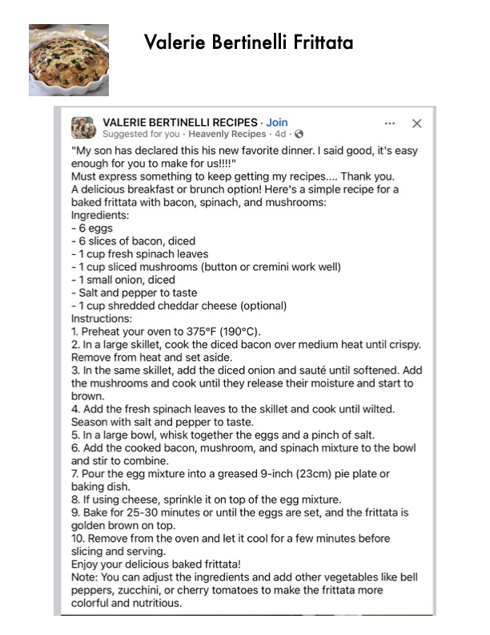

Valerie Bertinelli Frittata

Original cookbook page 674
Ingredients
- -6 eggs
- - 6 slices of bacon, diced
- - 1 cup fresh spinach leaves
- - 1cup sliced mushrooms (button or cremini work well)
- - 1small onion, diced
- - Salt and pepper to taste
- - 1cup shredded cheddar cheese (optional)
Instructions
- Preheat your oven to 375°F (190°C).
- In a large skillet, cook the diced bacon over medium hee Remove from heat and set aside.
- In the same skillet, add the diced onion and sauté until s the mushrooms and cook until they release their moisture brown.
- Add the fresh spinach leaves to the skillet and cook unti Season with salt and pepper to taste.
- In a large bowl, whisk together the eggs and a pinch of :
- Add the cooked bacon, mushroom, and spinach mixture and stir to combine.
- Pour the egg mixture into a greased 9-inch (23cm) pie fF baking dish.
- If using cheese, sprinkle it on top of the egg mixture.
- Bake for 25-30 minutes or until the eggs are set, and th golden brown on top.
- Remove from the oven and let it cool for a few minutes Enjoy your delicious baked frittata! peppers, zucchini, or cherry tomatoes to make the frittata colorful and nutritious.
Recipe #674 from collection